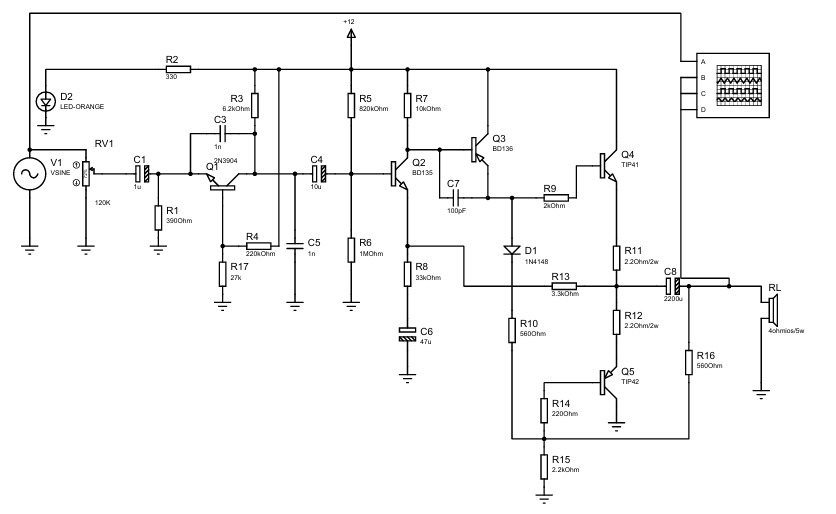

Descripción general
Amplificador de audio multietapa en configuración clase AB. Ideal para amplificar señales de baja amplitud provenientes de fuentes de audio. Ofrece buena eficiencia y baja distorsión.
Diagrama del circuito
Especificaciones técnicas
| Parámetro | Valor típico | Unidad |
|---|---|---|
| Tipo de amplificador | Clase AB | - |
| Número de etapas | 3 | - |
| Transistores activos | BJT (NPN/PNP) | - |
| Ganancia típica | 30 | dB |
| Impedancia de entrada | 10 kΩ | Ω |
| Impedancia de salida | 8 Ω | Ω |
| Voltaje de alimentación | 12 | V |
| Corriente de reposo | 50 | mA |
Observaciones
Este amplificador es común en aplicaciones de audio y prácticas de laboratorio. Su topología clase AB proporciona un equilibrio entre eficiencia y fidelidad de la señal.